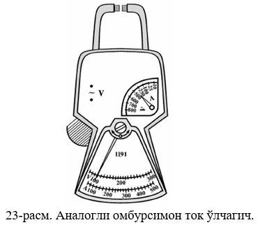
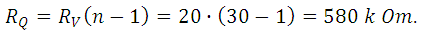
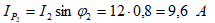

ЭЛЕКТР ЎЛЧАШЛАР
“Электр ўлчашлар” мавзуси иқтисодиётнинг барча тармоқларига хос бўлган, доимий равишда ва узлуксиз
тарзда ривожланишда бўлувчи йўналишлардан бири ҳисобланади. Маълумки, республикамизда туб иқтисодий
ислоҳотлар орқали бозор муносабатларини шакллантиришга киришишда энг аввало, унинг стратегик мақсадлари
белгиланиб олинди. Бу мақсадлар ичида “рақобатбардош маҳсулотларни ишлаб чиқаришни таъминлаш” алоҳида
таъкидлаб ўтилган. Иқтисодий ислоҳотларнинг устивор саналган йўналишларида ҳам қуйидагиларни кўришимиз
мумкин:
• илғор технологияларни жорий қилиш орқали тайёр экспортбоб маҳсулотлар ишлаб чиқаришни
кенгайтириш;
• аҳолини юқори сифатли озиқ-овқат маҳсулотлари билан таъминлаш;
• мамлакатнинг экспорт қувватидан тўла-тўкис фойдаланиш, уни жадаллик билан ривожлантириш.
Ҳозирги кунда ҳар бир мутахассис ўз фаолият соҳасидаги параметрларни ва уларни ўлчаш усулларини,
ўлчаш
воситаларини, уларнинг техникавий тавсифларини билишлари зарур. Бундан ташқари техника йўналишидаги
мутахассислар ўлчанадиган ва баҳоланадиган катталикларни назорат қилиш воситалари ҳамда уларни ишлатиш
билан боғлиқ бўлган масалалардан билм ва кўникмаларга эга бўлиши зарур. Илмий-техника тараққиётининг
асосий йўналишларидан бири катталикларни янада аниқроқ ўлчайдиган мукаммал назорат-ўлчаш асбобларини,
қурилмаларини ва тизимларини яратишдир.
Ушбу мавзуни ўзлаштириш талабаларда метрология бўйича асосий тушунчаларни, атамаларни, таърифларни,
электр ва ноэлектр катталикларни ўлчаш усуллари ва воситалари ҳамда уларнинг метрологик тавсифларини,
ўлчаш хатоликлари ва уларни баҳолаш каби масалаларни билишини тақозо этади. Бу эса бугунги кунда,
айниқса, жаҳон андозаларига мос келувчи маҳсулотларни ишлаб чиқариш ва уларнинг рақобатбардошлигини
таъминлашда, энг муҳими республикамизнинг иқтисодий салоҳиятини оширишда ўта муҳим масалалардан бири
саналади.
Электр ўлчашлар саноатимизнинг барча тармоқларида ишлаб чиқаришдаги замонавийликни акс эттириш,
технологик жараёнларни комплекс электрлаштириш ва автоматлаштириш, илғор, кўп йиллик тажрибадан ўтган
жаҳон андозаларидан фойдаланиш ва уларни республикамизда тадбиқ этиш кабиларни ўзига мужассамлаштирган.
Табиийки, барча соҳа мутахассислари қайси тоифада бўлишидан қатъий назар ушбу борада тегишли билим
ва
малакага эга бўлишлари лозим.
Ўлчаш хатоликлари.
Маълумки, ўлчаш хатоликлари турли сабабларга кўра турлича кўринишда намоён бўлиши ва бу сабаблар
қаторига қуйидагилар киритиши мумкин:
• ўлчаш воситасидан фойдаланишда уни созлашдан ёки созлаш даражасини силжишидан келиб чиқувчи
сабаблар;
• ўлчаш объектини ўлчаш жойига (позициясига) ўрнатишдан келиб чиқувчи сабаблар;
• ўлчаш воситаларининг занжирида ўлчаш маълумотини олиш, сақлаш, ўзгартириш ва тавсия этиш билан
боғлиқ
сабаблар;
• ўлчаш воситаси ва объектига нисбатан ташқи таъсирлар (харорат ёки босимнинг ўзгариши, электр ва
магнит
майдонларининг таъсири, турли тебранишлар ва ҳоказолар) дан келиб чиқувчи сабаблар;
• ўлчаш объектининг хусусиятларидан келиб чиқувчи сабаблар;
• операторнинг малакаси ва ҳолатига боғлиқ сабаблар ва шу кабилар.
Ўлчаш хатоликларини келиб чиқиш сабабларини таҳлил қилишда энг аввало ўлчаш натижасига салмоқли
таъсир
этувчиларини аниқлаш лозим бўлади.
Қуйидаги тасвирда (21-расм) ўлчашларнинг сифат мезонлари бўйича кластер диаграммаси келтирилган.
21-расм. Ўлчашларнинг сифат мезонлари бўйича кластер диаграммаси.
Ўлчаш хатоликлари у ёки бу хусусиятига кўра қуйида келтирилган турларга бўлинади:
Абсолют хатолик. Бу хатолик катталик қандай бирликларда ифодаланаётган бўлса, шу бирликда
тавсифланади.
Масалан, 0,2 V; 1,5 m ва ҳ.к. Абсолют хатолик қуйидагича аниқланади:
бунда, А х - ўлчаш натижаси;
Ач - катталикнинг чинакам қиймати; Ао - катталикнинг ҳақиқий қиймати.
Абсолют хатоликни тескари ишора билан олингани тузатма деб аталади.
Одатда, ўлчаш асбобларининг хатолиги келтирилган хатолик билан белгиланади.
Абсолют хатоликни асбоб кўрсатишининг энг максимал қийматига нисбатини процентларда олинганига
келтирилган хатолик деб аталади.

Нисбий хатолик – абсолют хатоликни ҳақиқий қийматга нисбатини билдиради ва фоиз (%) ларда ифодаланади:

Ўлчаш шароити тартибларига кўра хатоликлар қуйидагиларга бўлинади:
1. Статик хатоликлар - вақт мобайнида катталикнинг ўзгаришига боғлиқ бўлмаган хатоликлар. Ўлчаш
воситаларининг статик хатолиги шу восита билан ўзгармас катталикни ўлчашда ҳосил бўлади.
2. Динамик хатоликлар - ўлчанаётган катталикнинг вақт мобайнида ўзгаришига боғлиқ бўлган хатоликлар
саналади. Динамик хатоликларнинг вужудга келиши ўлчаш воситаларининг ўлчаш занжиридаги таркибий
элементларнинг инерцияси туфайли деб изоҳланади. Бунда ўлчаш занжиридаги ўзгаришлар оний тарзда эмас,
балки муайян вақт давомида амалга оширилиши асосий сабаб бўлади.
Келиб чиқиши сабаби (шароитига) қараб:
асосий; қўшимча хатоликларга бўлинади.
Нормал (градуировка) шароитда ишлатиладиган асбобларда ҳосил бўладиган хатолик асосий хатолик
дейилади.
Нормал шароит деганда температура 20 С 5 С ҳаво намлиги 65 % 15 %, атмосфера босими (750 30)
мм.сим.уст., ва бошқалар. Агар асбоб шу шароитдан фарқли бўлган ташқи шароитда ишлатилса, ҳосил
бўладиган хатолик қўшимча хатолик дейилади.
Моҳияти, тавсифлари, ўзгариш характерига қараб ва бартараф этиш имкониятларига кўра:
Мунтазам хатоликлар; Тасодифий хатоликлар; Қўпол хатоликлар ёки янглишув хатоликларга бўлинади.
“Ўлчаш асбобларининг асосий паспорт кўрсаткичларини аниқлаш ва уларни ҳисоблаш”

24 – расм. Рақамли омбурсимон ток ўлчагич ва техник характеристикалари.
Ток, кучланиш ва уч фазали ток занжирларида қувватни ўлчаш.
1.1. Токни ўлчаш. Токни ўлчаш учун амперметрлар ишлатилади. амперметрнинг кўрсатиши унинг ўлчаш
механизими орқали ўтаётган ток билан белгиланади. Шунинг учун амперметр занжирга кетма-кет уланади.
Занжирга амперметр уланганда токнинг қиймати ўзгармаслиги учун асбоб чулғами бир неча ўрамдан иборат
бўлган йўғон симлардан қилинади. Агар ўлчанадиган ток катта бўлса, амперметрга шунт уланади (27-расм).
RШ шунт қуйидаги муносабатдан топилади:

бу ерда I X - ўлчаниши зарур бўлган ток кучи,
Ia - асбобнинг шунтсиз ўлчай оладиган токи, (1.1) ифодадан
Нагрузкадаги I токни ўлчаш зарур бўлса, (1.1) ифодага кўра токларнинг нисбати қуйидагича бўлади:
Ia- асбобнинг кўрсатиши.
Ўзгарувчан ток занжирида амперметрнинг ўлчаш чегарасини ошириш учун ток трансформаторлари
ишлатилади.
1.2. Кучланишни ўлчаш. Вольтметрнинг кўрсатиши унинг клеммаларидаги кучланиш билан аниқланади.
Шунинг
учун кучланишни ўлчашда вольтметр занжирга параллел уланади (28-расм).
28-расм. Вольтметрнинг ўлчаш чегарасини кенгайтириш схемаси.
Вольтметр занжирга уланиганда у ўлчанаётган кучланишга (занжирни иш режимига) таъсир кўрсатмаслиги
учун
унинг қаршилиги вольтметр параллел уланаётган истеъмолчининг (генераторнинг) қаршилигига нисбатан катта
бўлиши керак. Вольтметрнинг қаршилиги r в катта бўлганда, ундаги исроф бўладиган номинал
қувват (Рвн) хам
кичик бўлади, чунки
Ўлчаш механизимининг клеммалари(қисмалари)даги кучланиш
Температура 10 0С га ўзгарганда ўлчаш механизмидаги мис чулғамининг қаршилиги 4%
ўзгарганлиги учун U
кучланиш I токка, демак қўзғалувчан қисмнинг бурилиш бурчагига пропорционал бўлмайди. Шундай килиб,
кучланишни аниқ ўлчаш мумкин эмас.
Ўлчаш механизимига кетма-кет қилиб, температура коэффициенти нолга яқин манганиндан ясалган катта
қўшимча қаршилик (rк>>rу) уласак, вольтметрнинг қаршилиги
rв=rу+rк температурага деярли боғлиқ бўлмай
қолади. Шундай қилиб, вольтметр қўзғалувчан қисмининг бурилиш бурчаги фақат токкагина эмас,
клеммалардаги кучланишга хам пропорционал бўлади:
Одатда, қўшимча қаршилик ўлчаш механизимининг номинал кучланиши кичик бўлганлиги сабабли вольтметрнинг
номинал кучланишини орттириш учун хам ишлатилади.
Юқори кучланишли ўзгарувчан ток занжирларидаги кучланишни чегараларини кенгайтириш учун қўшимча
қаршилик
билан бир каторда кучланишни ўлчаш тронсформаторлари хам ишлатилади.
Баён этилганлардан амперметр билан вольтметр фақат ўзларининг параметрлари билан фарқ қилувчи бир
хил
тузилишдаги механизмларга эга бўлиши мумкин, деган хулоса чиқади. Бироқ, амперметр ва вольтметр
ўлчанаётган занжирга турлича уланади ва турлича ички ўлчаш схемасига эга.
Mасала.
Ўзгармас ток занжирида I=100 А токни ўлчаш чегараси I A =5 А ички
қаршилиги RA=0,05 Ом бўлган
амперметр билан ўлчаш учун шунт қаршилиги хисоблансин.
Ечилиши: амперметирнинг ўлчаш чегарасини оширувчи коэффициент
Шунт қаршилиги
Кучланишни ўлчаш учун занжирнинг исталган (кучланиши ўлчовчи) қисмига вольтметр параллел қилиб уланади.
Вольтметр деганда шкаласи вольтларда даражаланган катта қўшимча ички қаршилиги нисбатан катта
милливольтметр тушунилади.
Mасала.
Ўзгармас ток занжирида U = 100 V ички қаршилиги R V = 20 kOm бўлган
вольтметр билан ўлчаш
учун қўшимча ташқи қаршилик
хисоблансин.
Ечилиши: вольтметрнинг ўлчаш чегарасини оширувчи коэффициент:
Қўшимча қаршилик:

Mасала. Чизмада келтирилган схемага уланган электродинамик асбобларнинг кўрсатиши: U = 120
V, I = 10 A, I 2 = 6 A бўлиб, частотаси f = 1 kGz
бўлганда; ток I, актив қаршилик R, ва индуктивлик L аниқлансин.
Ечиш:
масала. Схемага уланган амперметрларнинг кўрсатиш:I = 25 A, I 1 = 13,5 A, I
1 = 15 A ва R 2= 20 Om, f = 50 Gz тенг бўлган холат учун занжир
параметрлари ва сарф
бўладиган актив қувват (P) ҳамда қувват коэффиценти ҳисоблаб топилсин.
Ечиш:
Параллел уланган холатда умумий кучланиш:
Умумий ток эса:
Бундан:
Ёки:
Биринчи тармоқ бурчаги:
Тўла қаршилик:
Актив қаршилик:
Сиғим каршилиги:
Сиғим параметри:

Электр занжирнинг қувват коэффициенти:

Занжирда сарф бўладиган актив қувват:
Mасала. Кучланиш U = 120 V частотаси f = 50 Gz бўлган ток занжирига параметрлари:
бўлган иккита индуктив ғалтак истемолчилар
параллел уланган. Тармақ токлари, занжирнинг қувват коэффициенти ва истемолчиларда сарф бўладиган актив
қувват аниқлансин.
Ечиш:
Биринчи ғалтак индуктивлигини аниқлаймиз:
Биринчи ғалтак тўла қаршилигини аниқлаймиз:
Бириничи тармоқ токи:
Биринчи ғалтак қувват коэффициенти:
Бунда биринчи тармоқ токи актив ташкил этувчиси:
Реактив ташкил этувчиси:
Иккинчи ғалтак индуктив қаршилиги:
Иккинчи тармоқ токи:
Иккинчи ғалтак қувват коэффициенти:
Иккинчи тармоқ токи актив ташкил этувчиси:
Реактив ташкил этувчиси:

Умумий токнинг актив ташкил этувчиси қисми:

Реактив ташкил этувчиси:
Умумий ток қиймати:
Занжир қувват коэффициенти:
Биринчи ғалтакда сарф бўладиган актив қуввати:
Иккинчи ғалтакда сарф бўладиган актив қуввати:
Истемолчиларда сарф бўладиган актив қувват: